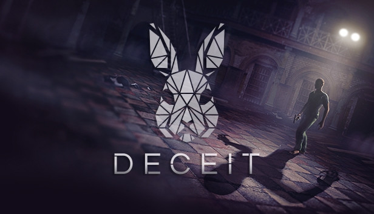
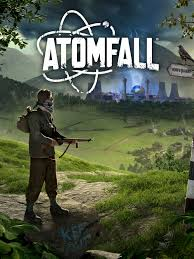
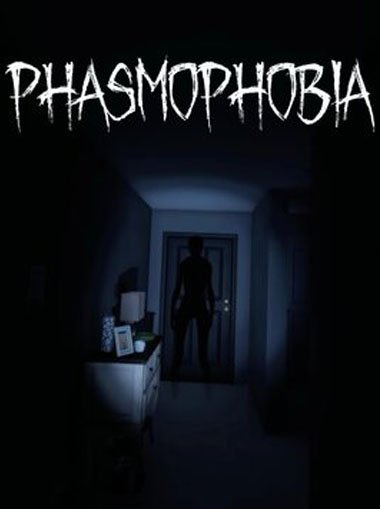
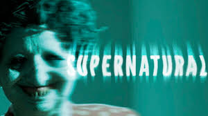
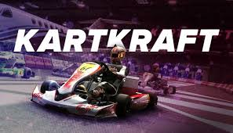
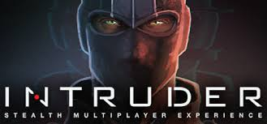

-
World War Z

é um frenético jogo de tiro em terceira pessoa para até 4 jogadores em equipe, com hordas de centenas de zumbis
ONLINE MULTIPLATAFORMA
-
Counter Strike 2

Jogo Online de tiro, muito daora
ONLINE
-
WWII Online: Chokepoint

Segunda Guerra Mundial
ONLINE
-
Klaus veens treason

é um jogo divertido de FPS
ONLINE
-
Deathly stillness

Jogo de ZOMBIE em mundo aberto
ONLINE
-
Brawhalla

Jogo de luta
ONLINE MULTIPLATAFORMA
-
Try Again

Jogo de plataforma igual ao inside
NO-ONLINE
-
Operation harsh doorstop

Jogo fps tatico, muito daora
ONLINE
-
Deceit
Deceit é um jogo de terror FPS online gratuito , de dedução social
ONLINE MULTIPLATAFORMA NO 2
-
Atomfall
Atomfall é um próximo jogo de ação e sobrevivência
NO-ONLINE
-
Phasmophobia
Phasmophobia é um jogo de terror psicológico de cooperação online entre 4 jogadores. Tu e a tua equipa de investigadores do paranormal irão visitar locais
ONLINE
-
Gift Collector

Jogo de terror com foco em exploração. Recolha presentes e evite perigos misteriosos.
NO-ONLINE
-
Hollow Knight

Um premiado jogo de aventura e ação em 2D, focado em exploração e desafios.
NO-ONLINE
-
South of Midnight

Jogo de aventura com foco em narrativa e visual único.
NO-ONLINE
-
Supernatural
Jogo de terror com elementos cooperativos online. Enfrente o desconhecido com outros jogadores.
TERROR ONLINE
-
Just Another Night Shift

Jogo de terror com foco em atmosfera e tensão durante o turno da noite.
NO-ONLINE
-
Oh Deer

Caça online.
ONLINE
-
KartKraft
Simulador realista de kart com ótima física e gráficos impressionantes.
ONLINE
-
Intruder
Jogo tático de espionagem multiplayer. Comunicação e estratégia são fundamentais.
ONLINE
-
Dying Light

Jogo de ação e sobrevivência em mundo aberto com parkour e zumbis.
NO-ONLINE
-
No man's sky

No Man's Sky é um videojogo de ficção científica com elementos de aventura e sobrevivência, desenvolvido e publicado pelo estúdio independente Hello Games.
ONLINE